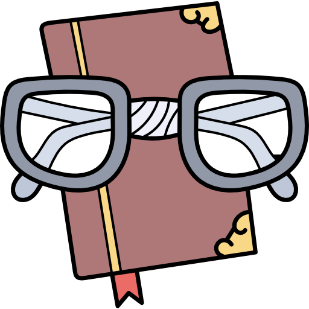

Resumen de la Unidad Didáctica
Resumen de la Unidad Didáctica
En esta unidad, encontrarás diferentes tipos de actividades para trabajar junto con los compañeros o de forma autónoma e individual por parejas o tríos. Así que prepárate para pensar, para profundizar buscando información, y así poderte evaluar tu mismo.
Mira este video antes de empezar para recordar que "la diversidad nos hace especiales y únicos".
Aprende a tu ritmo.
Puedes hacer una reflexión personal de lo que te ha transmito este vídeo y anotarla en tu blog de detective de la asignatura.
¿Qué temperatura hace? 
¿Te imaginas que el tiempo fuera igual todos los días?
Nuestra vida sería más aburrida, no tendríamos que
decidir qué ropa ponernos, ni necesitaríamos
informarnos del tiempo…
Daniel Fahrenheit también estaba preocupado por el
tiempo atmosférico. Por eso, estudió todos los aparatos
que, como el termómetro, medían la temperatura.
En 1747 inventó un nuevo termómetro de mercurio e
ideó una escala para medir la temperatura. La
temperatura más baja correspondía a 32 °F (32 grados
Fahrenheit), que es el punto de congelación del agua.
La más alta, 212 °F, la alcanza el agua al hervir. Entre
ambas estableció varios grados.
El termómetro de mercurio se utilizó en España hasta
2007. Ese año se dejó de fabricar porque el mercurio es
un metal peligroso para las personas y la naturaleza.
 Ahora por parejas, realizaremos una lectura del texto y contestaremos de forma oral a las siguientes preguntas. Después anotaremos las respuestas en nuestro "blog de detectives" y haremos un dibujo que represente el texto.
Ahora por parejas, realizaremos una lectura del texto y contestaremos de forma oral a las siguientes preguntas. Después anotaremos las respuestas en nuestro "blog de detectives" y haremos un dibujo que represente el texto.
Obra publicada con Licencia Creative Commons Reconocimiento Compartir igual 4.0